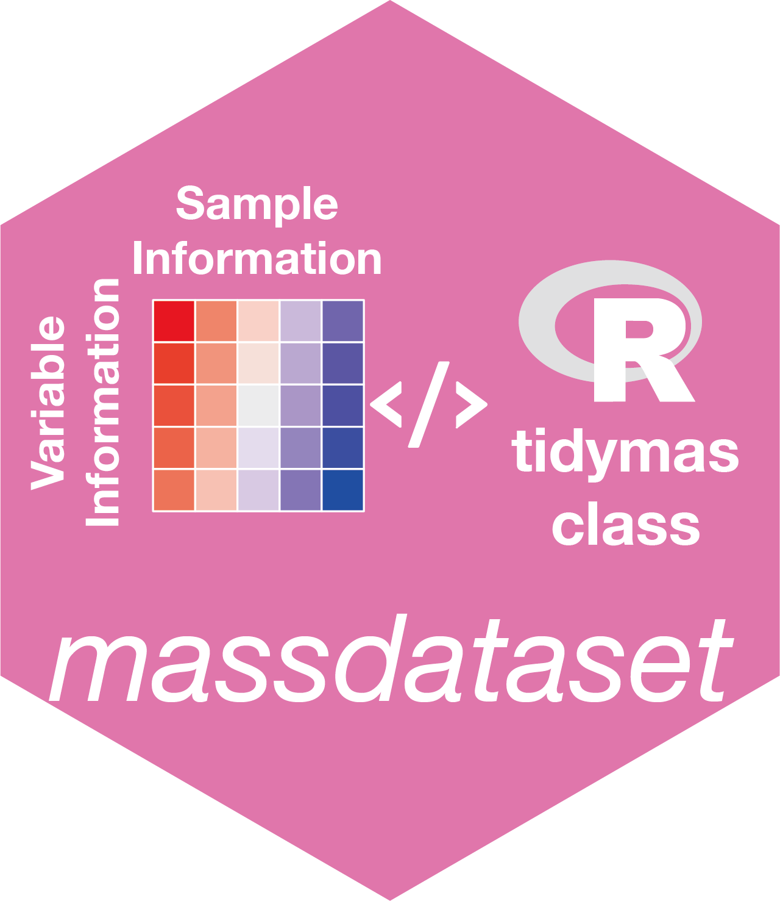

Mutate Sample Zero Frequency in mass_dataset Object
Source:R/mutate_sample_zero.R
mutate_sample_zero_freq.RdThis function adds a new column to the sample_info slot of a mass_dataset object,
which contains the frequency of zero values for each sample according to the variables specified.
Author
Xiaotao Shen xiaotao.shen@outlook.com
Examples
data("expression_data")
data("sample_info")
data("variable_info")
object =
create_mass_dataset(
expression_data = expression_data,
sample_info = sample_info,
variable_info = variable_info
)
object
#> --------------------
#> massdataset version: 0.99.3
#> --------------------
#> 1.expression_data:[ 1000 x 8 data.frame]
#> 2.sample_info:[ 8 x 4 data.frame]
#> 8 samples:Blank_3 Blank_4 QC_1 ... PS4P3 PS4P4
#> 3.variable_info:[ 1000 x 3 data.frame]
#> 1000 variables:M136T55_2_POS M79T35_POS M307T548_POS ... M232T937_POS M301T277_POS
#> 4.sample_info_note:[ 4 x 2 data.frame]
#> 5.variable_info_note:[ 3 x 2 data.frame]
#> 6.ms2_data:[ 0 variables x 0 MS2 spectra]
#> --------------------
#> Processing information
#> 1 processings in total
#> create_mass_dataset ----------
#> Package Function.used Time
#> 1 massdataset create_mass_dataset() 2026-03-04 12:54:26
##calculate NA frequency according to all the variables
object2 =
mutate_sample_zero_freq(object = object)
head(extract_sample_info(object))
#> sample_id injection.order class group
#> 1 Blank_3 1 Blank Blank
#> 2 Blank_4 2 Blank Blank
#> 3 QC_1 3 QC QC
#> 4 QC_2 4 QC QC
#> 5 PS4P1 5 Subject Subject
#> 6 PS4P2 6 Subject Subject
head(extract_sample_info(object2))
#> sample_id injection.order class group zero_freq
#> 1 Blank_3 1 Blank Blank NA
#> 2 Blank_4 2 Blank Blank NA
#> 3 QC_1 3 QC QC NA
#> 4 QC_2 4 QC QC NA
#> 5 PS4P1 5 Subject Subject NA
#> 6 PS4P2 6 Subject Subject NA
##calculate NA frequency according to only variables with mz > 100
variable_id =
object2 %>%
activate_mass_dataset(what = "variable_info") %>%
filter(mz > 100) %>%
pull(variable_id)
object3 =
mutate_sample_zero_freq(object = object2,
according_to_variables = variable_id)
object3
#> --------------------
#> massdataset version: 0.99.3
#> --------------------
#> 1.expression_data:[ 1000 x 8 data.frame]
#> 2.sample_info:[ 8 x 6 data.frame]
#> 8 samples:Blank_3 Blank_4 QC_1 ... PS4P3 PS4P4
#> 3.variable_info:[ 1000 x 3 data.frame]
#> 1000 variables:M136T55_2_POS M79T35_POS M307T548_POS ... M232T937_POS M301T277_POS
#> 4.sample_info_note:[ 6 x 2 data.frame]
#> 5.variable_info_note:[ 3 x 2 data.frame]
#> 6.ms2_data:[ 0 variables x 0 MS2 spectra]
#> --------------------
#> Processing information
#> 2 processings in total
#> create_mass_dataset ----------
#> Package Function.used Time
#> 1 massdataset create_mass_dataset() 2026-03-04 12:54:26
#> mutate_sample_zero_freq ----------
#> Package Function.used Time
#> 1 massdataset mutate_sample_zero_freq() 2026-03-04 12:54:26.932821
#> 2 massdataset mutate_sample_zero_freq() 2026-03-04 12:54:26.936161
head(extract_sample_info(object3))
#> sample_id injection.order class group zero_freq zero_freq.1
#> 1 Blank_3 1 Blank Blank NA NA
#> 2 Blank_4 2 Blank Blank NA NA
#> 3 QC_1 3 QC QC NA NA
#> 4 QC_2 4 QC QC NA NA
#> 5 PS4P1 5 Subject Subject NA NA
#> 6 PS4P2 6 Subject Subject NA NA